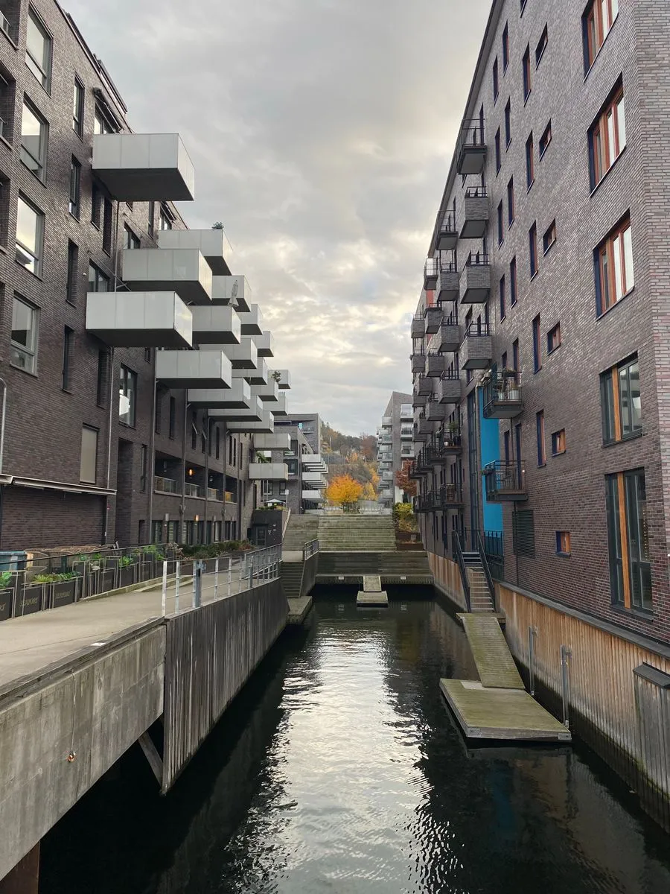
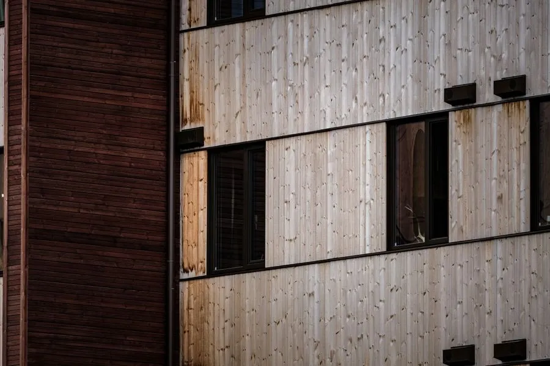

Design & build · London
We build what architects draw.
Homes, workplaces, schools and listed buildings, delivered on a fixed price and a programme you can see. Thirty-eight years, 412 projects, one standard.

- Projects delivered
- 412
- Value built
- £1.2bn
- On time or early
- 94%
- Days since a lost-time injury
- 2,190
01 · Sectors
Four specialisms. One standard.
Homes that age beautifully.
From single-family new builds to 120-unit apartment schemes, built to Passivhaus principles where clients want them.
- New-build houses & apartments
- Extensions & basements
- Passivhaus & net-zero
1,840homes delivered

Workplaces people want to return to.
Cat A and Cat B fit-outs, new office buildings and mixed-use schemes, delivered while neighbours keep working.
- Offices & mixed use
- Cat A / Cat B fit-out
- Retail & hospitality
2.1Msq ft built
Schools built around term time.
Classroom blocks, labs and sports halls phased to the school calendar, with zero days of lost teaching on our last 20 projects.
- Primary & secondary schools
- University labs
- Sports & community
36schools

Listed buildings, handled with care.
Conservation-led restoration and sensitive new insertions in Grade I and II listed buildings, working hand-in-hand with Historic England.
- Listed building restoration
- Façade retention
- Lime & stonework
48listed buildings
02 · Selected projects
Built, handed over, still standing proud.
03 · How we work
One team from first sketch to final key.
Design & build means one contract, one point of contact and one team that owns every risk, so problems get solved, not passed on.


Brief & feasibility
2–4 weeks
We visit, listen and test the numbers: site constraints, planning risk, budget and programme, before anything is drawn.
Design & planning
8–16 weeks
Our architects and engineers work with yours. We cost the design as it develops, so there are no surprises at tender.
Fixed-price contract
2 weeks
A single price and a single programme, with every risk listed and owned. One contract, one point of contact.
Build
Programme-led
A dedicated site team, weekly photo reports and a live programme you can see. Considerate Constructors on every site.
Handover & aftercare
12 months+
Snag-free handover, O&M manuals in a searchable portal, and a 12-month defects visit, with a 10-year structural warranty.
04 · Cost estimator
What will it cost? An honest first number.
05 · Start a project
Tell us what you're planning.
Enquiry received
Demo only: nothing was sent and no files left your device.